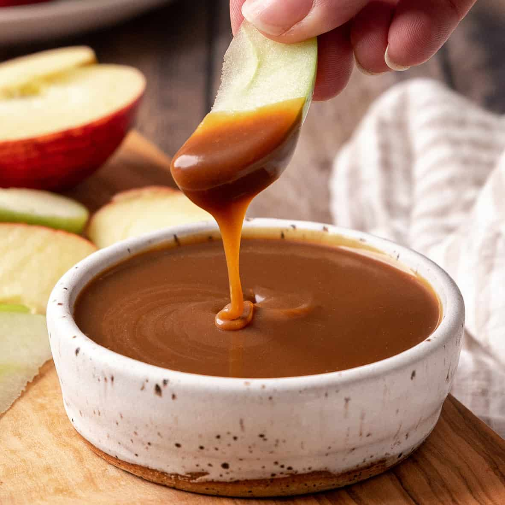

apple caramel dip

description
This is a delicious caramel apple dip that's easy to make with your favorite caramels and just 3 other ingredients. Sprinkle with nuts before serving for a tasty treat.
ingredients
- 16 individually wrapped caramels, unwrapped
- 1/4 cup water
- 1 package cream cheese
- 1/2 cup brown sugar
directions
- Melt caramels with water in a medium saucepan over medium-low heat or in the microwave, stirring frequently. Remove from heat and cool to room temperature.
- Beat cream cheese and sugar together in a medium bowl until fluffy; fold in caramel mixture. Serve immediately.